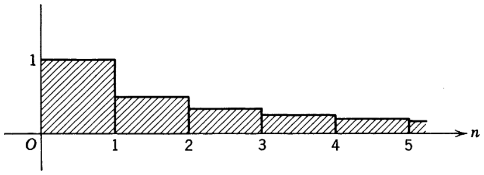
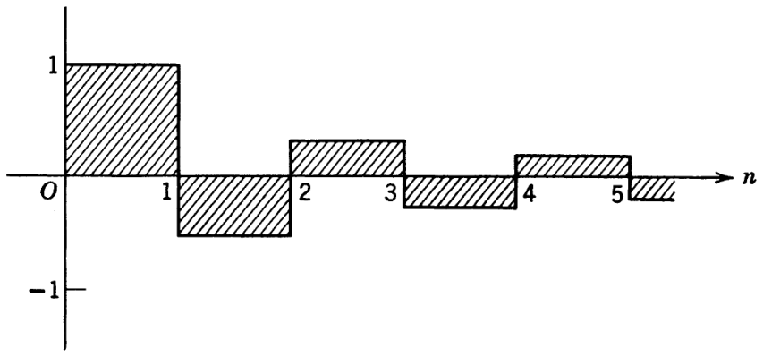
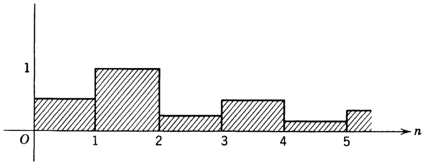
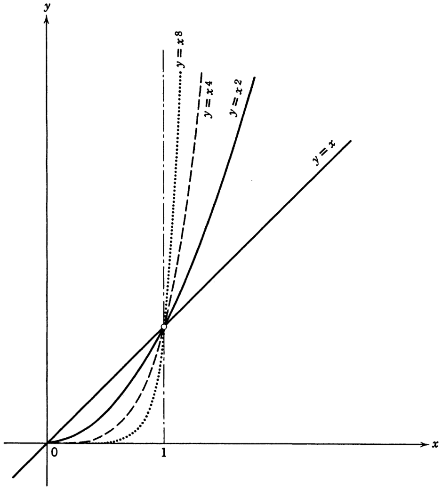
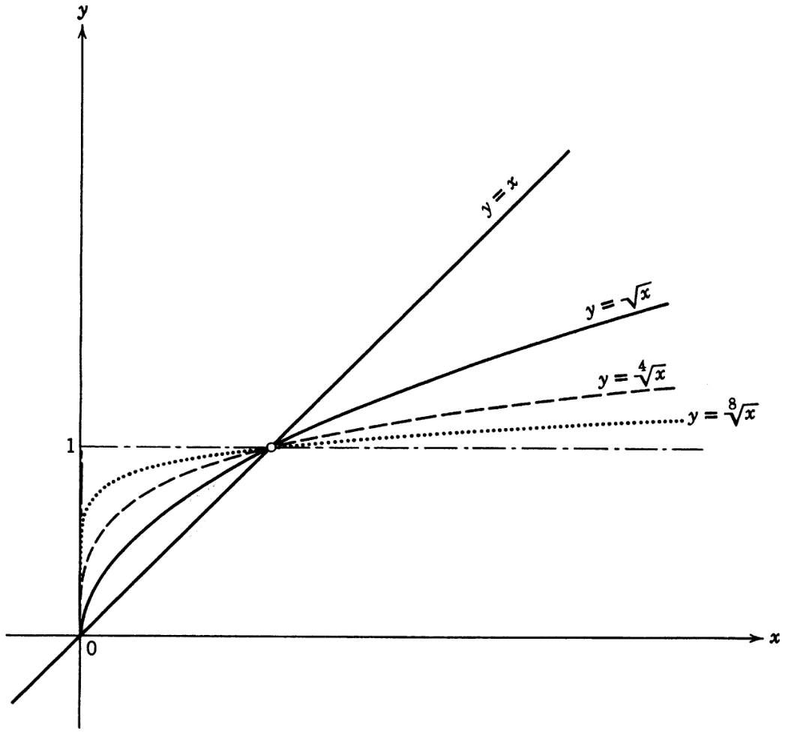

整个数学分析归根到底建立在一个基本概念上，这就是无穷数列 a n a_n a n 极限 。一个数 a a a a n a_n a n n n n a n a_n a n a a a a a a n n n n n n
数列 a 1 , a 2 , … a_1,a_2,\ldots a 1 , a 2 , … a n a_n a n x y xy x y x = n − 1 x=n-1 x = n − 1 x = n x=n x = n y = a n y=a_n y = a n y = 0 y=0 y = 0 ∣ a n ∣ |a_n| ∣ a n ∣ x x x a ( x ) a(x) a ( x ) x = n x=n x = n
原注 1 也完全可以取由 x = n x=n x = n x = n + 1 x=n+1 x = n + 1 y = a n y=a_n y = a n y = 0 y=0 y = 0 a n a_n a n
a. a n = 1 / n a_n=1/n a n = 1/ n
考察数列
1 , 1 2 , 1 3 , … , 1 n , …
1,\frac12,\frac13,\ldots,\frac1n,\ldots
1 , 2 1 , 3 1 , … , n 1 , … （图 1.41）。它没有一项是零，但 n n n a n a_n a n a n a_n a n n n n a n a_n a n 趋于零 ，或者说它们以零为极限 ，也可以说数列 a 1 , a 2 , a 3 , … a_1,a_2,a_3,\ldots a 1 , a 2 , a 3 , … 收敛于零 。

图 1.41 数列 aₙ = 1/n 如果用直线上的点来表示这些数，那么随着 n n n 1 / n 1/n 1/ n
数列
1 , − 1 2 , 1 3 , − 1 4 , … , ( − 1 ) n − 1 n , …
1,-\frac12,\frac13,-\frac14,\ldots,\frac{(-1)^{n-1}}n,\ldots
1 , − 2 1 , 3 1 , − 4 1 , … , n ( − 1 ) n − 1 , … 也有类似的情形（图 1.42）。n n n a n a_n a n a n a_n a n 振荡 。

图 1.42 各项正负交替的数列 数列收敛于零，通常用等式
lim n → ∞ a n = 0
\lim_{n\to\infty}a_n=0
n → ∞ lim a n = 0 表示，有时也简写为
b. a 2 m = 1 / m a_{2m}=1/m a 2 m = 1/ m a 2 m − 1 = 1 / ( 2 m ) a_{2m-1}=1/(2m) a 2 m − 1 = 1/ ( 2 m )
在前面的例子中，n n n a n a_n a n
1 2 , 1 , 1 4 , 1 2 , 1 6 , 1 3 , … , 1 2 m , 1 m , …
\frac12,1,\frac14,\frac12,\frac16,\frac13,\ldots,\frac1{2m},\frac1m,\ldots
2 1 , 1 , 4 1 , 2 1 , 6 1 , 3 1 , … , 2 m 1 , m 1 , … 当下标为偶数 n = 2 m n=2m n = 2 m a n = a 2 m = 1 / m a_n=a_{2m}=1/m a n = a 2 m = 1/ m n = 2 m − 1 n=2m-1 n = 2 m − 1 a n = a 2 m − 1 = 1 / ( 2 m ) a_n=a_{2m-1}=1/(2m) a n = a 2 m − 1 = 1/ ( 2 m ) n n n a n a_n a n

图 1.43 奇数项、偶数项交错趋于零
译者注 这里每个偶数项都是紧挨着的前一项的两倍。收敛所要求的是，指定一个误差范围后，从某项起就再也不越出这个范围。至于每一步究竟靠近了多少，甚至有没有暂时离远一些，都由数列本身决定。
c. a n = n / ( n + 1 ) a_n=n/(n+1) a n = n / ( n + 1 )
考察数列
a 1 = 1 2 , a 2 = 2 3 , … , a n = n n + 1 , … .
a_1=\frac12,\quad a_2=\frac23,\quad\ldots,\quad a_n=\frac n{n+1},\ldots .
a 1 = 2 1 , a 2 = 3 2 , … , a n = n + 1 n , … . 把它写成 a n = 1 − 1 / ( n + 1 ) a_n=1-1/(n+1) a n = 1 − 1/ ( n + 1 ) n n n a n a_n a n 1 1 1 1 1 1 a N a_N a N a n a_n a n
lim n → ∞ a n = 1.
\lim_{n\to\infty}a_n=1.
n → ∞ lim a n = 1. 数列
a n = n 2 − 1 n 2 + n + 1
a_n=\frac{n^2-1}{n^2+n+1}
a n = n 2 + n + 1 n 2 − 1 也有类似的性质。它同样随 n n n 1 1 1 lim n → ∞ a n = 1 \lim_{n\to\infty}a_n=1 lim n → ∞ a n = 1
a n = 1 − n + 2 n 2 + n + 1 = 1 − r n .
a_n=1-\frac{n+2}{n^2+n+1}=1-r_n.
a n = 1 − n 2 + n + 1 n + 2 = 1 − r n . 这样只需证明 r n r_n r n n > 2 n>2 n > 2 n + 2 < 2 n n+2<2n n + 2 < 2 n n 2 + n + 1 > n 2 n^2+n+1>n^2 n 2 + n + 1 > n 2 r n r_n r n
0 < r n < 2 n n 2 = 2 n ( n > 2 ) .
0<r_n<\frac{2n}{n^2}=\frac2n\qquad(n>2).
0 < r n < n 2 2 n = n 2 ( n > 2 ) . 于是 n n n r n r_n r n n > 2 n>2 n > 2 a n a_n a n 1 1 1 2 / n 2/n 2/ n
从这个例子可以看出，当 n n n a n a_n a n
d. a n = p n a_n=\sqrt[n]p a n = n p
设 p p p a 1 , a 2 , a 3 , … , a n , … a_1,a_2,a_3,\ldots,a_n,\ldots a 1 , a 2 , a 3 , … , a n , …
a n = p n .
a_n=\sqrt[n]p.
a n = n p . 我们断言
lim n → ∞ a n = lim n → ∞ p n = 1.
\lim_{n\to\infty}a_n=\lim_{n\to\infty}\sqrt[n]p=1.
n → ∞ lim a n = n → ∞ lim n p = 1. 证明要用到一个引理，它在别处也有用。
引理。 若 h h h n n n
( 1 + h ) n ≥ 1 + n h . (1)
(1+h)^n\ge1+nh. \tag{1}
( 1 + h ) n ≥ 1 + nh . ( 1 ) 这是二项式定理（第 59 页）的直接推论。由该定理，
( 1 + h ) n = 1 + n h + n ( n − 1 ) 2 h 2 + ⋯ + h n ,
(1+h)^n=1+nh+\frac{n(n-1)}2h^2+\cdots+h^n,
( 1 + h ) n = 1 + nh + 2 n ( n − 1 ) h 2 + ⋯ + h n , 而展开式里的每一项都非负。同样的论证还给出更强的不等式
( 1 + h ) n ≥ 1 + n h + n ( n − 1 ) 2 h 2 .
(1+h)^n\ge1+nh+\frac{n(n-1)}2h^2.
( 1 + h ) n ≥ 1 + nh + 2 n ( n − 1 ) h 2 . 回到原来的数列，分别考虑 p > 1 p>1 p > 1 p < 1 p<1 p < 1 p = 1 p=1 p = 1 p n \sqrt[n]p n p 1 1 1
若 p > 1 p>1 p > 1 p n > 1 \sqrt[n]p>1 n p > 1 p n = 1 + h n \sqrt[n]p=1+h_n n p = 1 + h n h n h_n h n n n n
p = ( 1 + h n ) n ≥ 1 + n h n ,
p=(1+h_n)^n\ge1+nh_n,
p = ( 1 + h n ) n ≥ 1 + n h n , 从而
0 < h n ≤ p − 1 n .
0<h_n\le\frac{p-1}{n}.
0 < h n ≤ n p − 1 . 当 n n n h n h_n h n a n a_n a n 1 1 1 a n a_n a n a n a_n a n 1 1 1 h n h_n h n ( p − 1 ) / n (p-1)/n ( p − 1 ) / n
若 p < 1 p<1 p < 1 1 / p > 1 1/p>1 1/ p > 1 1 / p n \sqrt[n]{1/p} n 1/ p 1 1 1
p n = 1 1 / p n ,
\sqrt[n]p=\frac1{\sqrt[n]{1/p}},
n p = n 1/ p 1 , 所以 p n \sqrt[n]p n p 1 1 1 1 1 1
e. a n = α n a_n=\alpha^n a n = α n
考察数列 a n = α n a_n=\alpha^n a n = α n α \alpha α n n n
先设 α \alpha α 1 1 1 α = 1 / ( 1 + h ) \alpha=1/(1+h) α = 1/ ( 1 + h ) h > 0 h>0 h > 0
a n = 1 ( 1 + h ) n ≤ 1 1 + n h < 1 n h .
a_n=\frac1{(1+h)^n}\le\frac1{1+nh}<\frac1{nh}.
a n = ( 1 + h ) n 1 ≤ 1 + nh 1 < nh 1 . 由于 h h h 1 / h 1/h 1/ h α \alpha α n n n n n n α n \alpha^n α n
lim n → ∞ α n = 0 ( 0 < α < 1 ) .
\lim_{n\to\infty}\alpha^n=0\qquad(0<\alpha<1).
n → ∞ lim α n = 0 ( 0 < α < 1 ) . 当 α \alpha α − 1 -1 − 1 lim n → ∞ ∣ α ∣ n = 0 \lim_{n\to\infty}|\alpha|^n=0 lim n → ∞ ∣ α ∣ n = 0
若 α = 1 \alpha=1 α = 1 α n \alpha^n α n 1 1 1 1 1 1
若 α > 1 \alpha>1 α > 1 α = 1 + h \alpha=1+h α = 1 + h h > 0 h>0 h > 0 n n n α n \alpha^n α n α n \alpha^n α n α n \alpha^n α n
lim n → ∞ α n = ∞ ( α > 1 ) .
\lim_{n\to\infty}\alpha^n=\infty\qquad(\alpha>1).
n → ∞ lim α n = ∞ ( α > 1 ) . 这里要特别强调，符号 ∞ \infty ∞ ∞ \infty ∞
若 α = − 1 \alpha=-1 α = − 1 α n \alpha^n α n n n n + 1 +1 + 1 − 1 -1 − 1 α < − 1 \alpha<-1 α < − 1 α n \alpha^n α n
f. α n \alpha^n α n p n \sqrt[n]p n p
考察函数 y = x n y=x^n y = x n y = x 1 / n = x n y=x^{1/n}=\sqrt[n]x y = x 1/ n = n x x x x 0 0 0 1 1 1 n n n y = x n y=x^n y = x n x x x y y y x = 1 x=1 x = 1 y = 1 y=1 y = 1

图 1.44 随着 n 增大的 xⁿ 函数 y = x 1 / n = + x n y=x^{1/n}=+\sqrt[n]x y = x 1/ n = + n x x x x 1 1 1 ( 1 , 1 ) (1,1) ( 1 , 1 ) y y y y = 0 y=0 y = 0 y = 1 y=1 y = 1 y = 1 y=1 y = 1 n n n n n n n n n y = x n y=x^n y = x n y = x y=x y = x y = x n y=\sqrt[n]x y = n x

图 1.45 随着 n 增大的 x 的 n 次方根
译者注 书中说的是整条曲线在图上的形状。若固定一个输入再取极限，x = 0 x=0 x = 0 0 0 0 x > 0 x>0 x > 0 1 1 1 n n n
g. 几何级数
初等数学中熟悉的另一个极限例子来自几何级数
1 + q + q 2 + ⋯ + q n − 1 = S n .
1+q+q^2+\cdots+q^{n-1}=S_n.
1 + q + q 2 + ⋯ + q n − 1 = S n . 数 q q q 公比 。只要 q ≠ 1 q\ne1 q = 1
S n = 1 − q n 1 − q .
S_n=\frac{1-q^n}{1-q}.
S n = 1 − q 1 − q n . 推导时，用 q q q
当 n n n S n S_n S n q q q − 1 -1 − 1 + 1 +1 + 1 S n S_n S n S S S
S = lim n → ∞ S n = 1 1 − q .
S=\lim_{n\to\infty}S_n=\frac1{1-q}.
S = n → ∞ lim S n = 1 − q 1 . 验证时，把 S n S_n S n ( 1 − q n ) / ( 1 − q ) = 1 / ( 1 − q ) − q n / ( 1 − q ) (1-q^n)/(1-q)=1/(1-q)-q^n/(1-q) ( 1 − q n ) / ( 1 − q ) = 1/ ( 1 − q ) − q n / ( 1 − q ) ∣ q ∣ < 1 |q|<1 ∣ q ∣ < 1 q n q^n q n n n n q n / ( 1 − q ) q^n/(1-q) q n / ( 1 − q ) S n S_n S n 1 / ( 1 − q ) 1/(1-q) 1/ ( 1 − q )
取极限的结果 lim n → ∞ ( 1 + q + q 2 + ⋯ + q n − 1 ) = 1 / ( 1 − q ) \lim_{n\to\infty}(1+q+q^2+\cdots+q^{n-1})=1/(1-q) lim n → ∞ ( 1 + q + q 2 + ⋯ + q n − 1 ) = 1/ ( 1 − q ) ∣ q ∣ < 1 |q|<1 ∣ q ∣ < 1 1 / ( 1 − q ) 1/(1-q) 1/ ( 1 − q )
有限几何级数的和 S n S_n S n 1 + q + q 2 + ⋯ 1+q+q^2+\cdots 1 + q + q 2 + ⋯ 部分和 。（要分清由各个数 q n q^n q n ∣ q ∣ < 1 |q|<1 ∣ q ∣ < 1 S n S_n S n n n n S = 1 / ( 1 − q ) S=1/(1-q) S = 1/ ( 1 − q ) 1 + q + q 2 + ⋯ 1+q+q^2+\cdots 1 + q + q 2 + ⋯ 收敛 ，其和为 S = 1 / ( 1 − q ) S=1/(1-q) S = 1/ ( 1 − q )
顺便指出，如果 q q q q = 1 2 q=\tfrac12 q = 2 1 q = 1 3 q=\tfrac13 q = 3 1 2 2 2 3 2 \tfrac32 2 3
x = 0.343434 ⋯ .
x=0.343434\cdots .
x = 0.343434 ⋯ . 它的值可由下式算出：
x = 34 10 2 + 34 10 4 + 34 10 6 + ⋯ = 34 10 2 ( 1 + 1 10 2 + 1 10 4 + ⋯ ) = 34 100 1 1 − 1 / 100 = 34 99 .
\begin{aligned}
x&=\frac{34}{10^2}+\frac{34}{10^4}+\frac{34}{10^6}+\cdots\\
&=\frac{34}{10^2}\left(1+\frac1{10^2}+\frac1{10^4}+\cdots\right)\\
&=\frac{34}{100}\frac1{1-1/100}=\frac{34}{99}.
\end{aligned}
x = 1 0 2 34 + 1 0 4 34 + 1 0 6 34 + ⋯ = 1 0 2 34 ( 1 + 1 0 2 1 + 1 0 4 1 + ⋯ ) = 100 34 1 − 1/100 1 = 99 34 . 原注 1（第 68 页） 见柯朗与罗宾斯《什么是数学？》，第 66 页。
h. a n = n n a_n=\sqrt[n]n a n = n n
我们来证明，数列
a 1 = 1 , a 2 = 2 , a 3 = 3 3 , … , a n = n n , …
a_1=1,\quad a_2=\sqrt2,\quad a_3=\sqrt[3]3,\ldots,\quad a_n=\sqrt[n]n,\ldots
a 1 = 1 , a 2 = 2 , a 3 = 3 3 , … , a n = n n , … 随 n n n 1 1 1
lim n → ∞ n n = 1.
\lim_{n\to\infty}\sqrt[n]n=1.
n → ∞ lim n n = 1. 对 n > 1 n>1 n > 1 a n a_n a n 1 1 1 a n = 1 + h n a_n=1+h_n a n = 1 + h n h n > 0 h_n>0 h n > 0
n = ( a n ) n = ( 1 + h n ) n ≥ 1 + n h n + n ( n − 1 ) 2 h n 2 ≥ n ( n − 1 ) 2 h n 2 .
\begin{aligned}
n=(a_n)^n=(1+h_n)^n
&\ge1+nh_n+\frac{n(n-1)}2h_n^2\\
&\ge\frac{n(n-1)}2h_n^2.
\end{aligned}
n = ( a n ) n = ( 1 + h n ) n ≥ 1 + n h n + 2 n ( n − 1 ) h n 2 ≥ 2 n ( n − 1 ) h n 2 . 由此，对 n > 1 n>1 n > 1
h n 2 ≤ 2 n − 1 ,
h_n^2\le\frac2{n-1},
h n 2 ≤ n − 1 2 , 从而
h n ≤ 2 n − 1 .
h_n\le\frac{\sqrt2}{\sqrt{n-1}}.
h n ≤ n − 1 2 . 现在有
1 ≤ a n = 1 + h n ≤ 1 + 2 n − 1 .
1\le a_n=1+h_n\le1+\frac{\sqrt2}{\sqrt{n-1}}.
1 ≤ a n = 1 + h n ≤ 1 + n − 1 2 . 右端显然趋于 1 1 1 a n a_n a n 1 1 1
i. a n = n + 1 − n a_n=\sqrt{n+1}-\sqrt n a n = n + 1 − n
本例中的 a n a_n a n ∞ − ∞ \infty-\infty ∞ − ∞
lim n → ∞ ( n + 1 − n ) = 0.
\lim_{n\to\infty}(\sqrt{n+1}-\sqrt n)=0.
n → ∞ lim ( n + 1 − n ) = 0. 证明只须把原式写成
n + 1 − n = ( n + 1 − n ) ( n + 1 + n ) n + 1 + n = 1 n + 1 + n .
\sqrt{n+1}-\sqrt n
=\frac{(\sqrt{n+1}-\sqrt n)(\sqrt{n+1}+\sqrt n)}{\sqrt{n+1}+\sqrt n}
=\frac1{\sqrt{n+1}+\sqrt n}.
n + 1 − n = n + 1 + n ( n + 1 − n ) ( n + 1 + n ) = n + 1 + n 1 . 现在一眼便看得出，n n n
j. a n = n / α n a_n=n/\alpha^n a n = n / α n α > 1 \alpha>1 α > 1
形式上看，a n a_n a n ∞ / ∞ \infty/\infty ∞/∞ a n = n / α n a_n=n/\alpha^n a n = n / α n
为证明这一点，置 α = 1 + h \alpha=1+h α = 1 + h h > 0 h>0 h > 0
( 1 + h ) n ≥ 1 + n h + n ( n − 1 ) 2 h 2 > n ( n − 1 ) 2 h 2 .
(1+h)^n\ge1+nh+\frac{n(n-1)}2h^2>\frac{n(n-1)}2h^2.
( 1 + h ) n ≥ 1 + nh + 2 n ( n − 1 ) h 2 > 2 n ( n − 1 ) h 2 . 于是当 n > 1 n>1 n > 1
a n = n ( 1 + h ) n < 2 ( n − 1 ) h 2 .
a_n=\frac n{(1+h)^n}<\frac2{(n-1)h^2}.
a n = ( 1 + h ) n n < ( n − 1 ) h 2 2 . 由于 a n a_n a n a n a_n a n